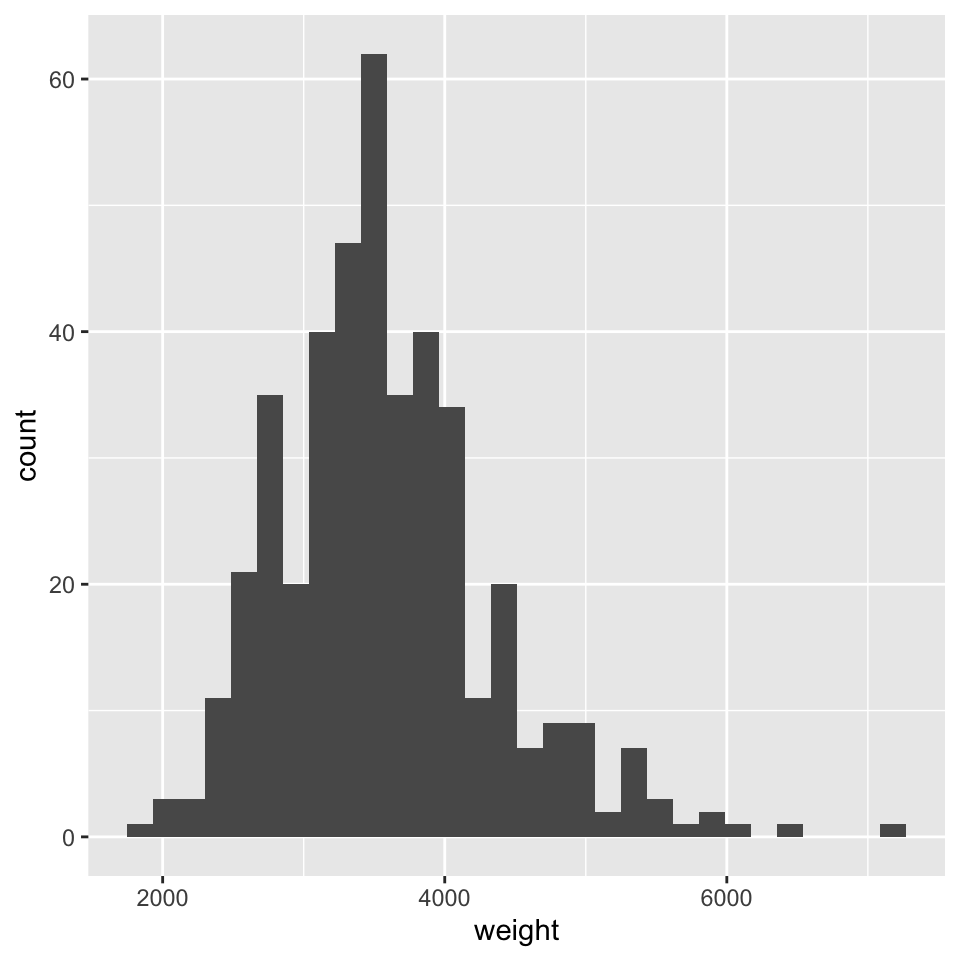
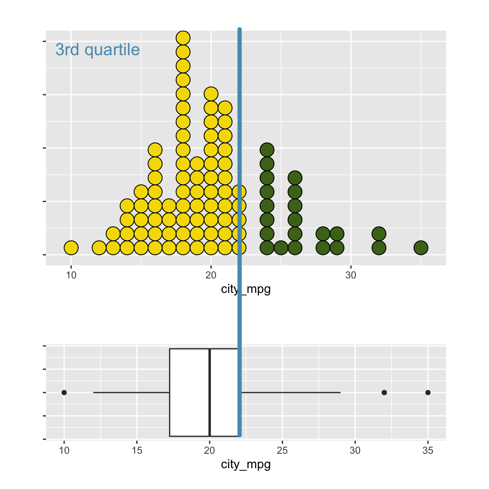

Exploring numerical data
In this lesson, we’ll broaden our tool box of exploratory techniques to encompass numerical data. Numerical data are data that take the form of number, where those numbers actually represent a value on the number line (in contrast to a number like zip code that can’t be ordered on a number line).
The dataset that we’ll be working with is one that has information on the cars that were for sale in the US in a certain year.
Cars dataset
In this lesson, you’ll be working with the cars dataset,
which records characteristics on all of the new models of cars for sale
in the US in a certain year. We can learn more about each variable using
the glimpse() function.
glimpse(cars)## Rows: 428
## Columns: 19
## $ name <chr> "Chevrolet Aveo 4dr", "Chevrolet Aveo LS 4dr hatch", "Chev…
## $ sports_car <lgl> FALSE, FALSE, FALSE, FALSE, FALSE, FALSE, FALSE, FALSE, FA…
## $ suv <lgl> FALSE, FALSE, FALSE, FALSE, FALSE, FALSE, FALSE, FALSE, FA…
## $ wagon <lgl> FALSE, FALSE, FALSE, FALSE, FALSE, FALSE, FALSE, FALSE, FA…
## $ minivan <lgl> FALSE, FALSE, FALSE, FALSE, FALSE, FALSE, FALSE, FALSE, FA…
## $ pickup <lgl> FALSE, FALSE, FALSE, FALSE, FALSE, FALSE, FALSE, FALSE, FA…
## $ all_wheel <lgl> FALSE, FALSE, FALSE, FALSE, FALSE, FALSE, FALSE, FALSE, FA…
## $ rear_wheel <lgl> FALSE, FALSE, FALSE, FALSE, FALSE, FALSE, FALSE, FALSE, FA…
## $ msrp <int> 11690, 12585, 14610, 14810, 16385, 13670, 15040, 13270, 13…
## $ dealer_cost <int> 10965, 11802, 13697, 13884, 15357, 12849, 14086, 12482, 12…
## $ eng_size <dbl> 1.6, 1.6, 2.2, 2.2, 2.2, 2.0, 2.0, 2.0, 2.0, 2.0, 2.0, 1.7…
## $ ncyl <int> 4, 4, 4, 4, 4, 4, 4, 4, 4, 4, 4, 4, 4, 4, 4, 4, 4, 4, 4, 4…
## $ horsepwr <int> 103, 103, 140, 140, 140, 132, 132, 130, 110, 130, 130, 115…
## $ city_mpg <int> 28, 28, 26, 26, 26, 29, 29, 26, 27, 26, 26, 32, 36, 32, 29…
## $ hwy_mpg <int> 34, 34, 37, 37, 37, 36, 36, 33, 36, 33, 33, 38, 44, 38, 33…
## $ weight <int> 2370, 2348, 2617, 2676, 2617, 2581, 2626, 2612, 2606, 2606…
## $ wheel_base <int> 98, 98, 104, 104, 104, 105, 105, 103, 103, 103, 103, 103, …
## $ length <int> 167, 153, 183, 183, 183, 174, 174, 168, 168, 168, 168, 175…
## $ width <int> 66, 66, 69, 68, 69, 67, 67, 67, 67, 67, 67, 67, 67, 68, 66…We learn that we have 428 observations, or cases, and 19 variables. Unlike most displays of data, the glimpse function puts each of the variables as a row, with its name followed by its data type, followed by the first several values.
The car names are character strings, which are like factors, except
its common for every case to take a unique value.
lgl, stands for logical variables, another
simple case of a categorical variable where there are only two levels.
For example, each car will take either TRUE or FALSE depending on if it
is a sports car or not. We can see that the last set of variables are
all either int for integer or
dbl for double.
They are actually both numerical variables, but the integers are
discrete and the double are continuous (and are allocated more computer
memory). If you look at ncyl, the number of cylinders, it’s
listed as an integer, but there are only a few different values that it
can take. So, it actually behaves a bit like categorical variable.
Let’s construct some plots to help us explore this data.
Dotplot
The most direct way to represent numerical data is with a dotplot, where each case is a dot that’s placed at it’s appropriate value on the x-axis. The dots are then stacked on top of other cases with similar values. You can think of a dotplot as a sibling to the histogram, except you know exactly how many observations are in each “bin,” because you can count the dots. Importantly, the plot has much less information loss than a histogram, as you could almost rebuild the dataset if you were only given this plot. As you can imagine, these plots start to get difficult to read as the number of cases gets very large.
The code below produces a dotplot of the weight of the 428 cars in
the dataset. Notice, since we are only interested in one numerical
variable (weight), there is only one variable specified in
the aesthetics. Additionally, this variable is specified as
the x aesthetic, as it is “standard” to plot a numerical
variable on the x-axis. Finally, we notice the
geom_dotplot() function is used to add dots to the plot.
This function has an optional argument (input) of dotsize,
which specifies how large the dots should be (values closer to 0 are
smaller, values closer to 1 are larger).
ggplot(data = cars, aes(x = weight)) +
geom_dotplot(dotsize = 0.4)We notice in the dotplot, the y-axis is a bit confusing, as it is unclear what the 0.0 and 1.0 refer to. This is an unfortunate limitation of ggplot2, where binning along the x axis and stacking along the y axis results in a non-meaningful y axis. As we progress in our plotting abilities, we could choose to hide the y axis or manually scale it to match the number of dots.
Histogram
One of the most common plots to use is a histogram, which solves this problem by aggregating the dots into bins on the x axis, then mapping the height of the bar to the number of cases that fall into that bin. Because of the binning, it’s not possible to perfectly reconstruct the dataset, but it allows us to gain a bigger picture of the shape of the distribution.
Notice, the only aspect of the code that changes is the transition
from geom_dotplot() to geom_histogram().
ggplot(data = cars, aes(x = weight)) +
geom_histogram()## `stat_bin()` using `bins = 30`. Pick better value with `binwidth`.## Warning: Removed 2 rows containing non-finite outside the scale range
## (`stat_bin()`).
Note: When we run the code above, we get a message. The
message lets us know that it has picked a binwidth for us
and a warning that there were 14 missing values. This is
not an error, it is a message that
ggplot() is providing you!
Histogram bins
If the stepwise (not continuous) nature of the histogram irks you,
then you have a few options. First, you can play around with the
bins or binwidth arguments to find the number
of bins to make the histogram as continuous as possible. Or, second, you
could use a density plot, which is up next!
ggplot2 does its best to select a sensible bin width
by default, but you can override that option by specifying it yourself.
The bins and binwidth arguments to
geom_histogram() is similar to the dotsize
argument to geom_dotplot(), as it is optional and controls
one aspect of the histogram. If we use a binwidth of 5, the result is a
histogram that’s much smoother. Alternatively, we could choose to
specify the number of bins we would like, instead of the 30 bins
geom_histogram() defaults to.
# Set the binwidth to 5
ggplot(data = cars, aes(x = hwy_mpg)) +
geom_histogram(binwidth = ___)# Set the binwidth to 15
ggplot(data = cars, aes(x = hwy_mpg)) +
geom_histogram(binwidth = ___)One thing that’s important to know about histograms like this one is that your sense of the shape of the distribution can change depending on the bin width that is selected.
Your turn!
Create the following three plots:
- A histogram of horsepower (i.e.
horsepwr) with a binwidth of 3. - A second histogram of horsepower with a binwidth of 30.
- A third histogram of horsepower with a binwidth of 60.
# Create hist of horsepwr with binwidth of 3
ggplot(data = ___, aes(___)) +
geom_histogram(binwidth = ___) +
## adds on a title to the plot
labs(title = "binwidth = ___")
# Create hist of horsepwr with binwidth of 30
# Create hist of horsepwr with binwidth of 60Three binwidths interpretation
Answer the following question based on the plots below.
Density plot
The density plot represents the shape of the histogram using a smooth line. You can think of the density plot as drawing a smoothed line over the top of a histogram, providing a smoother representation of the shape of the distribution. A density plot is fairly sensitive to spikiness in the data, so you’ll only want to use it when you have a large number of observations.
Notice, the only line in our code that has changed switches to
geom_density().
ggplot(data = cars, aes(x = weight)) +
geom_density()Bandwidth
If we wanted to make our density plot appear a bit smoother, we can increase what’s known as the bandwidth of the plot. When we increase the bandwidth, we get a smoother plot, and smaller bandwidths create more volatile looking plots.
But how do we decide what the “best” binwidth or bandwidth is for our
plots? Usually the defaults are sensible, but it’s good practice to
tinker with both smoother and less-smooth versions of the plots to focus
on different scales of structure in the data. Similar to the
bins argument for histograms, the bandwidth specifies the
number of bins geom_density() should use when making the
plot. As you can imagine, it’s easier to smooth over a smaller number of
bins, so if you want a smoother density plot, you would choose larger
values of bw.
Try a few other values for the bandwidth in the exercise below.
ggplot(data = cars, aes(x = weight)) +
geom_density(bw = 100)Boxplot
Similar to a histogram, a boxplot does not plot the raw data. Instead, it plots summaries of the data. A boxplot plots the center of the distribution (median), the values that mark off the middle half of the data (first and third quartiles), and the values that mark off the vast majority of the data (ends of the whiskers).
Notice, we have only changed one line in our R code,
switching to geom_boxplot().
ggplot(data = cars, aes(x = weight)) +
geom_boxplot()The box represents the central bulk of the data,
the whiskers contain almost all the data,
and the extreme values are represented as points. You’ll see the syntax for this is a bit different: we’ll discuss why later on in the lesson.

Boxplots & Dotplots
Let’s dig deeper to understand how exactly boxplots are constructed by starting with a dotplot.
The boxplot is based around three summary statistics:
- The first quartile of the data – 25% of the data falls below this number
- The second quartile – 50% of the data falls below this number
- The third quartile – 75% of the data falls below this number

You might be more familiar with the second quartile as the median, the value that’s in the middle of the dataset. It’s the second quartile because two quarters, or half, of the data is below it, and half is above it. The first quartile, then, has only one quarter (25%) of the data below it and the third quartile has three quarters (75%) of the data below it.
These three numbers form the box in the boxplot, with the median in the middle and the first and third quartiles as the edges. One thing you always know when looking at a boxplot is that the middle half of the data is inside this box. There are various rules for where to draw the whiskers, the lines that extend out from the box.
The rule used by ggplot2 to determine if an observation is an “outlier” is calculate 1.5 times the length of the box (IQR) and use that to determine the upper and lower “fence” for observations. This is calculated as \(Q_1 - 1.5 \times \text{IQR}\) and \(Q_3 + 1.5 \times \text{IQR}\). These numbers are the furthest that the whiskers are allowed to extend. If an observation is outside of these numbers, it is plotted as a point. This is one of the handy features of a boxplot: it flags for you points that are far away from the bulk of the data, a form of automated potential outlier detection.
Density plots vs. boxplots
Boxplots really shine in situations where you need to compare several distributions at once and also as a means to detect outliers. One of their weaknesses, however, is their inability to indicate when a distribution has more than one hump or “mode”.
Consider the density plot here, there are two distinct modes. If we construct a boxplot of the same distribution, it sweeps this important structure under the rug and will always only provide a single box.
Your turn!
Consider two other columns in the cars dataset:
city_mpg and width. Which is the most
appropriate plot for displaying the important features of their
distributions? Remember, both density plots and boxplots display the
central tendency and spread of the data. A boxplot is more robust to
outliers, but hides multiple modes in a distribution.
Use density plots or boxplots to construct the following visualizations. For each variable, try both plots and submit the one that is better at capturing the important structure.
- Display the distribution of
city_mpg. - Display the distribution of
width.
# Create plot of city_mpg
ggplot(data = cars, ___) +
___
# Create plot of width
ggplot(data = cars, ___) +
___Does a distribution appear to have outliers? If so, a boxplot is more appropriate. Does a distribution have multiple modes? If so, a density plot is more appropriate. Boxplots for outlier detection
In addition to indicating the center and spread of a distribution, a
boxplot provides a graphical means to detect outliers. You can apply
this method to the msrp column (manufacturer’s suggested
retail price) to detect if there are unusually expensive or cheap
cars.
To do this, let’s carry out the following steps:
- Construct a boxplot of
msrp.
- Create a new dataset named
cars_no_outthat excludes the largest 3-5 outliers, by filtering the rows to retain cars less than $100,000.
- Construct a new boxplot of
msrpusing this reduced dataset. - Compare the two plots.
# Construct boxplot of msrp
ggplot(data = cars, aes(x = ___)) +
___
# Exclude outliers from data
cars_wo_outliers <- cars |>
filter(___)
# Construct boxplot of msrp using the reduced dataset
ggplot(data = ___, aes(___)) +
___ # Construct boxplot of msrp
cars |>
ggplot(aes(x = msrp)) +
geom_boxplot()
# Exclude outliers from data
cars_wo_outliers <- cars |>
filter(msrp < ___)
# Construct boxplot of msrp using the reduced dataset
ggplot(data = ___, aes(___)) +
___ # Construct boxplot of msrp
cars |>
ggplot(aes(x = msrp)) +
geom_boxplot()
# Exclude outliers from data
cars_wo_outliers <- cars |>
filter(msrp < 100000)
# Construct boxplot of msrp using the reduced dataset
ggplot(data = ___, aes(___)) +
___ # Construct boxplot of msrp
cars |>
ggplot(aes(x = msrp)) +
geom_boxplot()
# Exclude outliers from data
cars_wo_outliers <- cars |>
filter(msrp < 100000)
# Construct boxplot of msrp using the reduced dataset
ggplot(data = cars_wo_outliers, aes(___)) +
___ # Construct boxplot of msrp
cars |>
ggplot(aes(x = msrp)) +
geom_boxplot()
# Exclude outliers from data
cars_wo_outliers <- cars |>
filter(msrp < 100000)
# Construct boxplot of msrp using the reduced dataset
ggplot(data = cars_wo_outliers, aes(x = msrp)) +
geom_boxplot()# Construct boxplot of msrp
cars |>
ggplot(aes(x = msrp)) +
geom_boxplot()
# Exclude outliers from data
cars_wo_outliers <- cars |>
filter(msrp < 100000)
# Construct boxplot of msrp using the reduced dataset
ggplot(data = cars_wo_outliers, aes(x = msrp)) +
geom_boxplot()Visualizations of two variables
If you’re interested in the distribution of a single numerical variable, there are three ways you can get there. The first is to look at the marginal distribution, like, for example, the simple distribution of highway mileage.
However, if we want to look at the distribution on a different subset of the data, say cars that are pickup trucks, we can add a second variable to the plot.
There are two main methods for incorporating a second variable into the plots we’ve explored, (1) adding a facet, or (2) adding colors.
Faceted histograms
Let’s use a histogram to look at the distribution of highway mileage,
with separate plots for whether or not the car is a pickup truck. We can
make these separate plots by adding a facet_wrap() layer to
our ggplot(). The variable you want to facet by goes inside
the facet_wrap() function, and needs to be specified with
the vars() function. The vars() function
selects variables from the dataset with the name provided.
ggplot(data = cars, aes(x = hwy_mpg)) +
geom_histogram() +
facet_wrap(vars(pickup))Based on the plot, it’s clear that are many more non-pickups (values
of FALSE) than pickups (values of TRUE). The
plot also shows that the typical pickup gets much lower mileage than the
typical non-pickup and that non-pickups have more variability than do
the pickups.
Try it yourself!
Let’s investigate the distribution of the fuel efficiency
(city_mpg) faceted by whether the vehicle is classified as
an suv (a logical variable indicating whether the car is an
SUV or not).
# Create faceted histogram
ggplot(data = cars, aes(x = ___)) +
geom_histogram() +
facet_wrap(vars(___))# Create faceted histogram
ggplot(data = cars, aes(x = city_mpg)) +
geom_histogram() +
facet_wrap(vars(___))Colored density plots
It is a bit easier to compare the variability with density plots
overlaid. Notice, we have two new aspects to our plot, (1) the
fill aesthetic, and (2) the alpha option.
The fill aesthetic maps a color to the categorical
variable given to it. You can think of this as a “filling” the density
plots with different colors for trucks and non-trucks. The
alpha argument changes the transparency of the density
plots. Ordinarily, it would be impossible to see the area where these
plots overlap. However, by making them more transparent (an
alpha less than 1), we can see the overlapping areas.
ggplot(data = cars, aes(x = hwy_mpg, fill = pickup)) +
geom_density(alpha = 0.5)Try it yourself!
The mileage of a car tends to be associated with the size of its engine (as measured by the number of cylinders). To explore the relationship between these two variables, you could stick to using histograms, but in this exercise you’ll try your hand at two alternatives: the boxplot and the density plot.
First, let’s see how many unique values number of cylinders there are in the dataset.
We can use the count() function to find the unique
values for the variable ncyl and also see how many
observations there are for each value.
cars |>
count(___)That’s probably more possible levels of ncyl than you
might think! Particularly, the ncly of -1 should catch your
eye! (Perhaps this is an error in data entry?)
Here, we’re going to make a new dataset that only contains the most
common values of ncyl.
To do this, we are going to filter cars to include only
cars with 4, 6, or 8 cylinders and save the result as
common_cyl. When we wanted to filter our data to only
include a particular level of a categorical variable, we used the
== comparison, but here we want to include three different
values. For this operation, we need to used the inclusion
(%in%) operator!
The inclusion operator keeps any values of a variable that are
included in the vector of values given
(e.g. letter %in% c("a", "b", "c")). Thus, the
%in% operator always comes with the c()
function, which makes the vector of values we are interested in.
Putting this all together, our code looks like:
common_cyl <- cars |>
filter(ncyl %in% c(4, 6, 8))Now, with the common_cyl dataset, create overlaid
density plots of city_mpg colored by ncyl.
Keep in mind that ncyl is a numerical variable, so you will
need to convert it to a categorical variable to use it as the
fill.
# Create overlaid density plots for same data
ggplot(data = common_cyl, aes(x = ___, fill = ___)) +
geom_density(alpha = 0.3)# Create overlaid density plots for same data
ggplot(data = common_cyl, aes(x = city_mpg, fill = ___)) +
geom_density(alpha = 0.3)# Create overlaid density plots for same data
ggplot(data = common_cyl, aes(x = city_mpg, fill = as.factor(ncyl))) +
geom_density(alpha = 0.3)Compare distribution via plots
Let’s take a more careful look at that plot you just made.
Ridge plots
Ridgeline plots are especially useful for staggering the layout of
overlapping density plots. Essentially a ridge plot separates each
density plot, creating the impression of a mountain range. To create a
ridge plot, you use the ggridges package, and the
geom_density_ridges() function.
common_cyl |>
ggplot(aes(x = city_mpg, y = as.factor(ncyl), fill = as.factor(ncyl))) +
geom_density_ridges()We notice that the code looks similar to before, with one notable
difference: the use of a y aesthetic. The y
aesthetic specifies how many different ridges should be made, based on
the categorical variable that is specified.
Cleaning up the titles & legend
The y-axis title of “as.factor(ncyl)” is rather unappealing, but
there are ways we can change it! The labs() function
controls the labels of the different plot aesthetics. To change the
y axis label, we specify a new name inside quotations
(""), like so:
common_cyl |>
ggplot(aes(x = city_mpg, y = as.factor(ncyl), fill = as.factor(ncyl))) +
geom_density_ridges() +
labs(y = "Number of Cylinders")
We also notice that the name of the y axis is the same as the name of
the legend. This indicates that the legend isn’t adding any new
information to our plot, and can / should be removed. To remove the
legend, you add a theme() to the ggplot(). The
theme specifies the legend.position and sets it to
"hide".
common_cyl |>
ggplot(aes(x = city_mpg, y = as.factor(ncyl), fill = as.factor(ncyl))) +
geom_density_ridges() +
labs(y = "Number of Cylinders",
x = "City Mileage (mpg)") +
theme(legend.position = "hide")Visualization in higher dimensions
In this tutorial, we’ve been encouraging you to think about the question of “what is the association between this variable and that one” and “if you condition on one level of this variable, how does the distribution of another change”. The answers to these questions require multivariate thinking and it is an essential skill in reasoning about the structure of real data. But why stop at only two variables?
Plots for 3 variables
One simple extension that allows you to plot the association between
three variables is the facet_grid() function. Similar to
its facet_wrap() counterpart, the facet_grid()
function creates subplots based on the levels of the variable(s) input.
However, unlike the facet_wrap() function,
facet_grid() can facet by more than one variable, creating
a matrix of subplots.
Let’s see how this works by building a plot that explores
msrp, the manufacturer’s suggested retail price. Since that
variable is numerical, there are several plots we could use, but let’s
go with a density plot. By adding a facet_grid() layer, we
can break that distribution down by two categorical variables, each
specified with the vars() function. In the end, we will
have multiple density plots of the msrp variable!
The code for this would look something like:
cars |>
ggplot(aes(x = msrp)) +
geom_density() +
facet_grid(vars(pickup), vars(rear_wheel))Within the facet_wrap() function, whichever variable you
put first will go in the rows of the grid and the the one that you put
last form the columns. Unfortunately, this plot is difficult to
interpret since it doesn’t remind us which variable is on the rows
versus columns. We can solve this by adding an option to the facet grid
layer: labeller is equal to label_both.
cars |>
ggplot(aes(x = msrp)) +
geom_density() +
facet_grid(pickup ~ rear_wheel, labeller = label_both)Alright, now we can learn something. If we look at rear wheel drive pickups, there appear to actually be two modes, but in general, they’re a bit cheaper than front wheel drive pickups. In non-pickups, however, its the rear-wheel drive ones that are generally a bit pricier.
An important investigation when making these comparisons is the
number of observations at each level. We can use the
count() function to do this! The code below should look
familiar, with one addition: a second variable as an input to the
count() function. When we add a second variable, the
count() function will count the number of observations at
the intersection of each of the two variables (e.g. non-rear wheel drive
pickups).
cars |>
count(rear_wheel, pickup)Based on the table, we learn that there are relatively few rear wheel drive cars in this dataset. While this would be plainly obvious had we used histograms, density plots normalize each distribution so that they have the same area. The take home message is that our interpretation is still valid, but when we’re making comparisons across the rear wheel variable, there are fewer cases to compare.
Higher dimension plots
This is just the tip of the iceberg of high dimensional data graphics. Anything you can discern visually, things like shape, size, color, pattern, movement, in addition to relative location, can be mapped to a variable and plotted alongside other variables.
Shape
Size
Color
Pattern
Movement
x-coordinate
y-coordinate
Your turn!
For our final exercise, let’s explore the relationship between highway mileage, the number of cylinders a car has, and whether it is an SUV or not.
The common_cyl dataset you created before, containing
only cars with 4, 6, or 8 cylinders, is available in your workspace.
To begin, using the
common_cyldata, create a histogram ofhwy_mpg.Next, add a
facet_grid()to the plot, withncylon the rows andsuvon the columns.Finally, add facet labels to your plot to indicate what variables are being faceted on.
# Facet histograms using hwy mileage and ncyl
common_cyl |>
ggplot(aes(x = ___)) +
geom_histogram() +
facet_grid(vars(___), vars(___), labeller = ___)common_cyl |>
ggplot(aes(x = hwy_mpg)) +
geom_histogram() +
facet_grid(vars(___), vars(___), labeller = ___)Interpreting plots with three variables
Submit
Submit your hash in a form
After creating the hash, please copy it, navigate to this form and fill it in and submit. You will need to submit the form once for every lesson you complete in this tutorial.